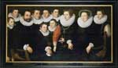
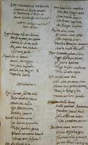
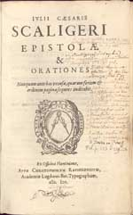
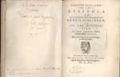
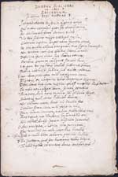

Adelaar in de wolken. De Leidse jaren van Josephus Justus Scaliger 1593-1609
Samenstelling: Paul G. Hoftijzer & Kasper van Ommen
| 7.1 | Familieportret van de familie Dousa door Roelof Willemsz Van Culemborg, ca. | ||
|
1590-92. Leiden, Stedelijk Museum De Lakenhal, inv. nr. S 9
(reproductie). Afgebeeld zijn, in de bovenste rij, van links naar rechts: Georgius, Dousa Pater, Janus Filius, Stephanus, Franciscus, Anna. Elisabeth van Zuylen, Ioanna. In de tweede rij, aan de linkerkant de jongste zoons, Iacobus, Warnerus en Didericus. |
|||
|  | |||
| 7.2 | Josephus Justus Scaliger, ‘Epithalamium Nobilissimorum Gasparis ab Eusum | ||
| Niewenorti Domini, et Annae Iani Dousae Domini a
Noortwyck filiae’, 30 mei 1600. Autograaf. UBL hs. Scal 25, fols.
139v-140r. Het opschrift en de twee eerste strofen zijn gericht tot de vader van de bruid, Dousa, en luiden als volgt: |
|||
| Ios. Scaliger Nobiliss. Iano Dousae a Noortwyck Quod damus tibi nec bonum Dousa maxime, nec catum Carmen, hoc pietas malo Atque amor tuus extudit Qualecunque poetae Si quid esset ei tamen Mentis, ille negotia Nec senex iuvenalia Debuit, neque tangere Nuptialia caelebs. |
|||
| Vertaling: Het pretentieloze gedicht dat
wij u schenken, o zeer grote Dousa, en dat niet goed en niet
kunstig is, werd door uw verering en uw liefde afgedwongen van
een slechte dichter. Had die een beetje verstand gehad, dan had
hij als oude man geen onderwerp voor de jeugd en als celibatair
geen huwelijksthema mogen aanroeren. Het gedicht is afgedrukt in Scaliger, Poemata (Leiden, 1615), pp. 3-9. |
|||
|  | |||
|
|
|||
| 7.3 | Julius Caesar Scaliger, Epistolae et orationes (Leiden: Christophorus | ||
|
Raphelengius, 1600). UBL 690 D 18. Bevat opdrachtbrief van Franciscus Dousa aan de Franse ambassadeur Paulus Schovartus Buzanvalius, Den Haag, 26 januari, voorwerk, f. *2r-v. |
|||
|  | |||
|
|
|||
| 7.4 | Brief van Scaliger aan Janus Dousa, gedateerd 30 april [1591]. UBL hs. Lips.4. | ||
Geheel onderaan het verzoek van Scaliger aan Lipsius de groeten
te doen aan Dousa: ‘Ego Douzam salvere iubeo.’ Een gedrukte
versie van de brief in J.J. Scaliger, Epistolae omnes quae
reperiri potuerunt ..., ed. D. Heinsius (Leiden: Bonaventura
en Abraham Elzevier, 1627), pp. 80-81.
|
|||
|
|
|||
| 7.5 | Josephus Justus Scaliger, Epistola de vetustate et splendore gentis | ||
|
Scaligerae (Leiden: Franciscus I Raphelengius, 1594).
THYSIA 2052. Deze gedrukte brief, gedateerd Leiden 19 mei 1594, is geschreven aan Dousa. De uitgave van de brief en enkele andere teksten werd verzorgd door Dousa’s oudste zoon Janus, die ook de opdrachtbrief aan de Franse gezant in Den Haag, Paulus Schovartus Buzanvalius, toevoegde. Het hier getoonde exemplaar werd door Scaliger met een eigenhandig geschreven opdracht geschonken aan prins Maurits en kwam waarschijnlijk in 1749 op de markt door de veiling van de bibliotheek van stadhouder Frederik-Hendrik. Wanneer het door de Bibliotheca Thysiana is verworven is onbekend. De brief is ook opgenomen in J.J. Scaliger, Epistolae et orationes (Leiden: Christophorus Raphelengius, 1600), pp. 1-58. |
|||
|  | |
| 7.6 | Josephus Justus Scaliger, ‘Epicedium’ op de overleden Janus Dousa, 1604. |
|
Autograaf. UBL hs. BPG 77, Fasc. V (6 fols.). Dit eigenhandige rouwdicht van Scaliger is ook afgedrukt in Daniel Heinsius, Laudatio ... Iani Dousae (Leiden, 1605), pp. 57-64 (‘Iosephi Scaligeri Iul. Caes. F. Epicedium Nobilissimi, Innocentiss. et Doctiss. Iani Dousae a Nordwick’) en in het voorwerk van Janus Dousa, Poemata pleraque selecta, ed. P. Scriverius en in Scaligers Opuscula varia antehac non edita (Frankfurt, 1612), pp. 284-291 en Poemata omnia (Leiden, 1615), pp. 92-97. |
|
|  | |
| vorige pagina | volgende pagina |